"Exploration of Fab-lab Course Module Three: Understanding Computer-Aided Cutting"
The third module of the Fab-lab course focused on computer-aided cutting, particularly using laser cutting machines.
This module provided comprehensive guidance on operating these machines effectively and the essential input they require.
To create designs for the laser cutter, it's crucial to use SVG or vector images that can be easily scaled without losing quality.
Software like Fusion 360, AutoCAD, were introduced for this purpose.
Personally, I opted for Fusion 360 due to its user-friendly interface.
Designing also involves considering factors like kerf, which varies based on the material being used.
Kerf refers to the material that gets burned away during laser cutting.
Laser CAD software played a pivotal role in providing the necessary instructions to the laser cutter based on our designs.
In addition to lasers, the module delved into computer numerical control (CNC) machines for cutting tasks.
Depending on the job's nature, different types of CNC machines are selected.
These machines are programmed using G-code and M-code, which are then fed into the machine for execution.
The machines use various tools of different shapes and sizes, which can be adjusted as needed.
They prove especially useful for crafting 3D objects like cylinders and cubes.
To conclude, the computer-aided cutting module within the Fab-lab course brought insights into the realm of laser cutting and CNC machines.
It emphasized design considerations, material intricacies like kerf, and the importance of software tools like Fusion 360.
Through hands-on experience, I learned how to manipulate these machines to craft intricate designs and accurately cut materials for various applications.
This module's knowledge is a valuable asset for anyone venturing into the field of digital fabrication.
 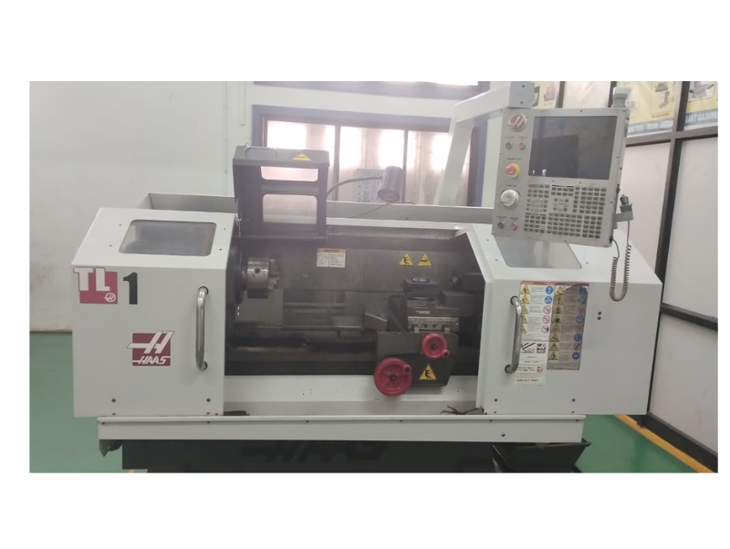
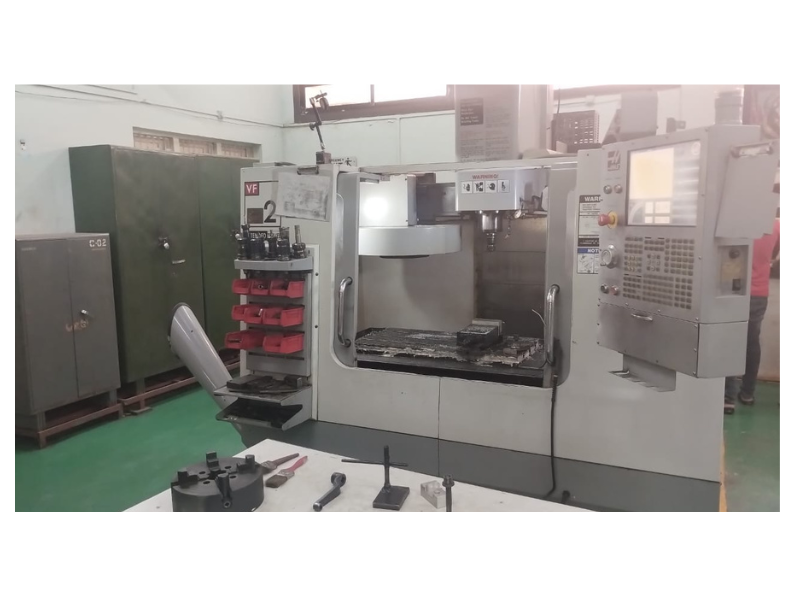
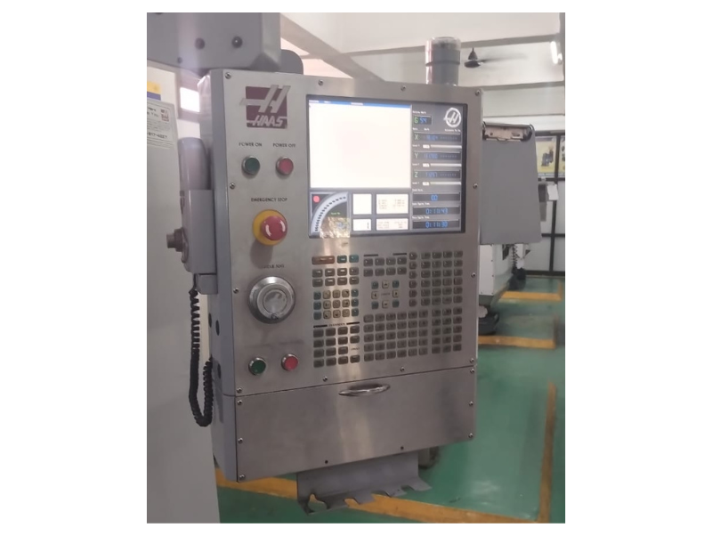
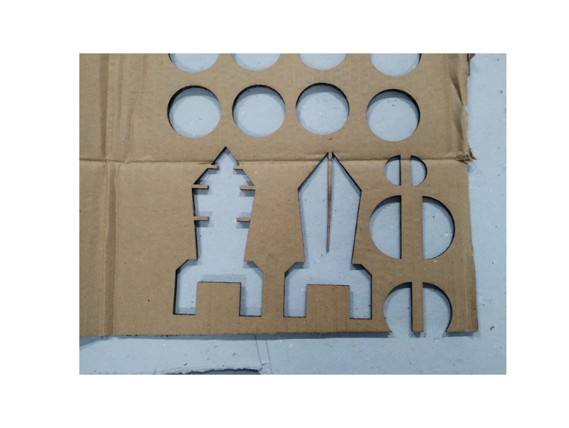
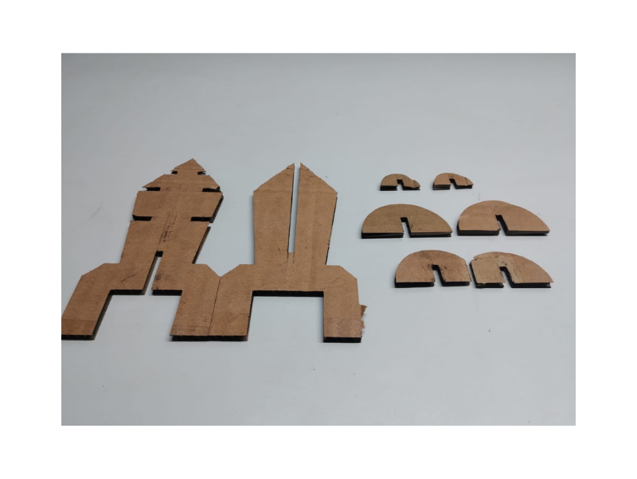
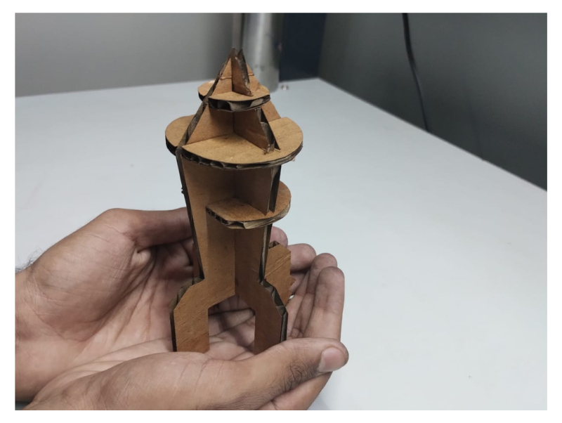
Thats it.
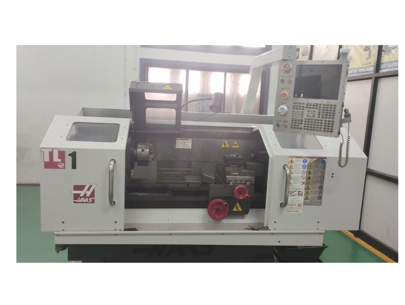
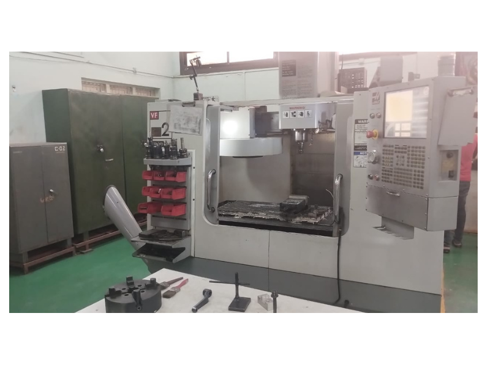
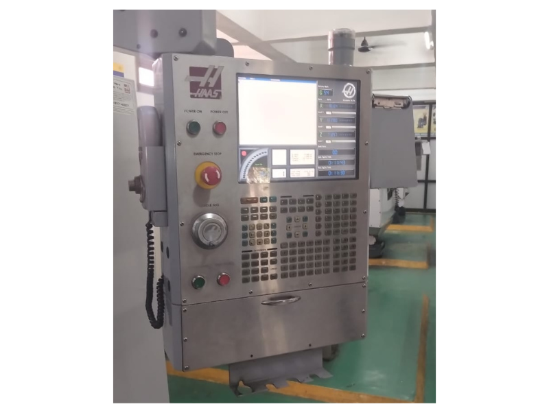
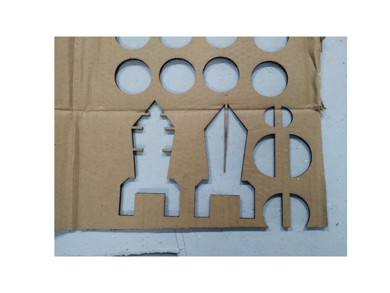
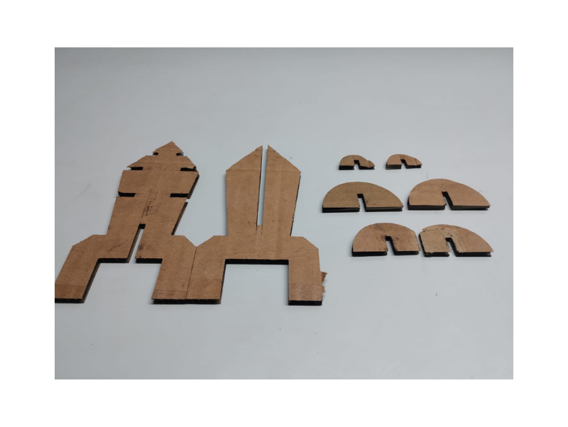
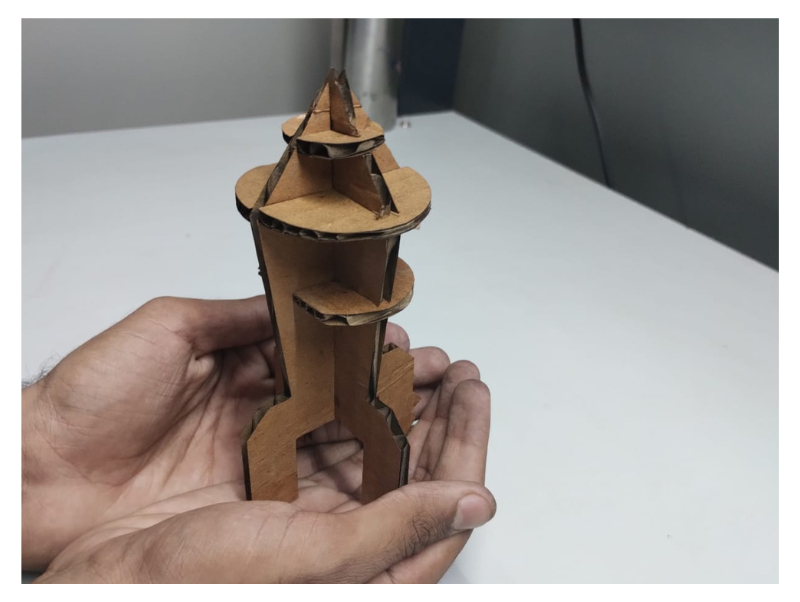
Thats it.